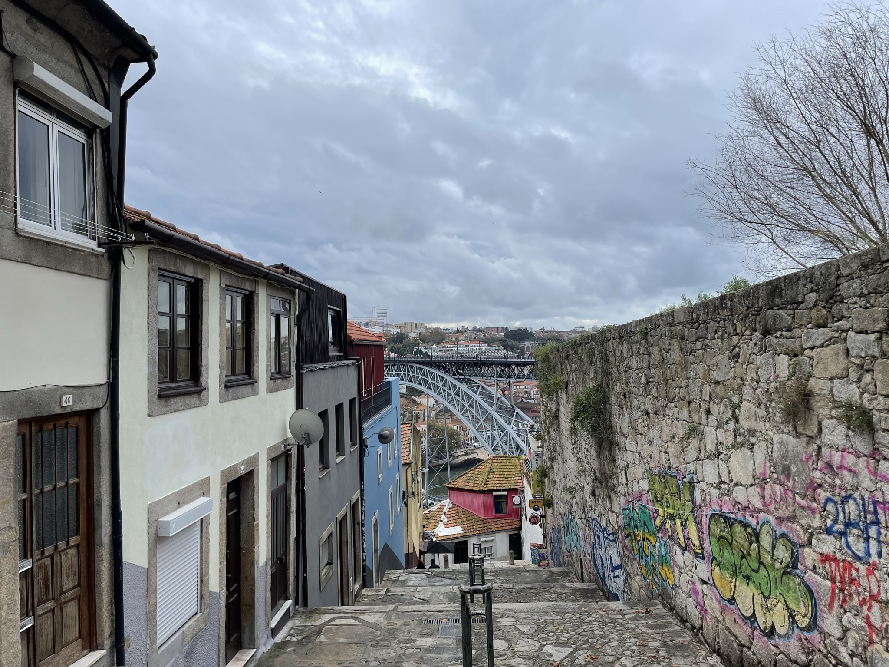
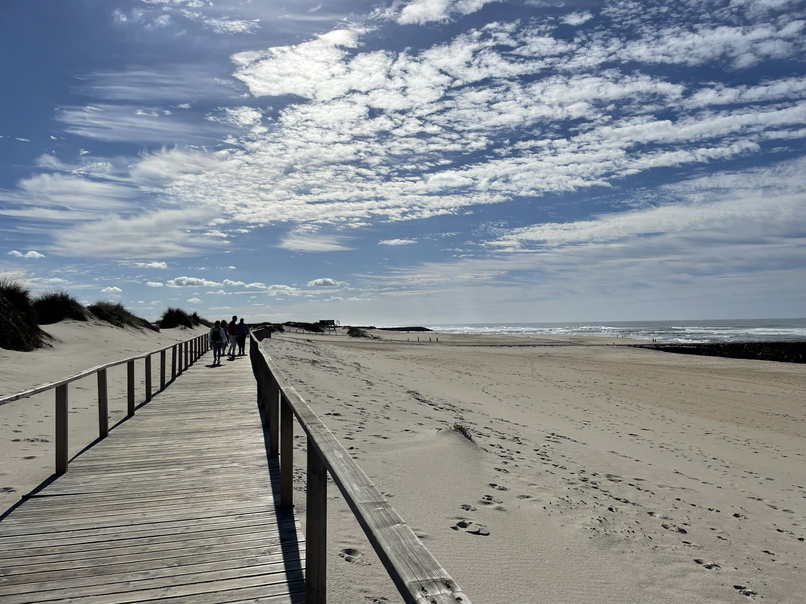
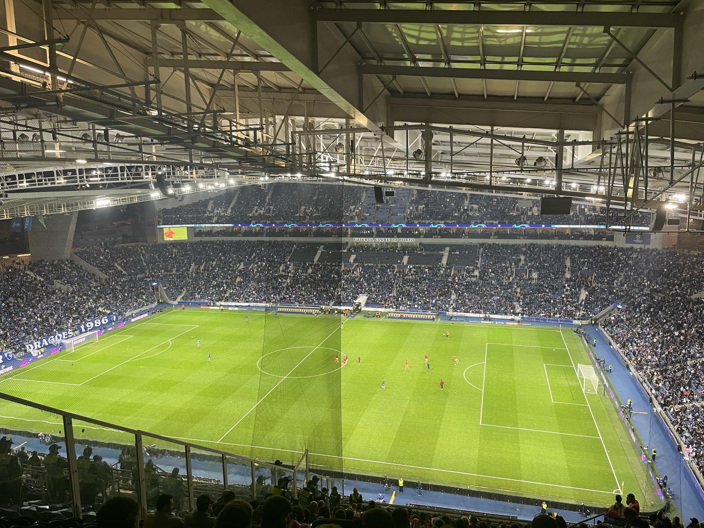
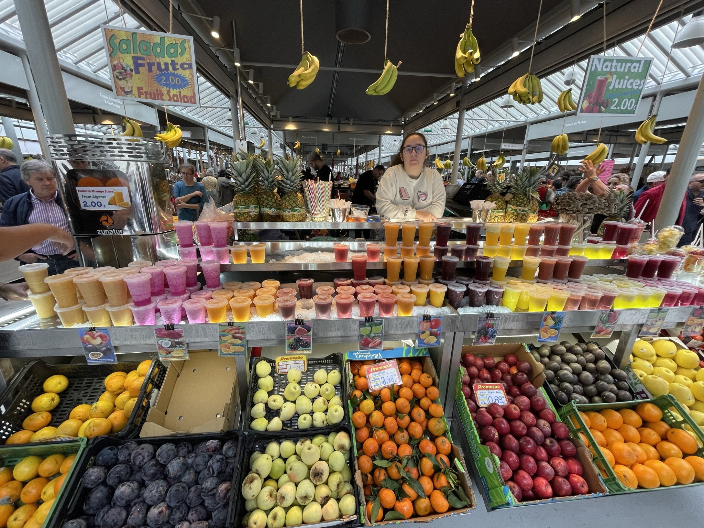

El primer día

Una de las cosas que más me gustan de Oporto, son sus maravillosas vistas.Nada más llegar, acudí al mismo sitio donde vi Oporto por primera vez hace muchos años atras. Y desde ahi contemplé el puente más famoso de Oporto, el puente Don Luis I.
Oporto tiene mucho encanto, ya que todas sus calles son de adoquines y sus edificios son muy antigüos. Una de las cosas que más me gusta de esta pintoresta ciudad es la tranquilidad que transmite. Esto puede resultar extraño ya que suele estar muy frecuentada por turistas, pero a mi me transmite mucha calma.
El segundo día

Esta es una de las zonas más bonitas de los alrededores de Oporto, se encuentra en Aveiro y se llama Costa Nova de Aveiro. En esta zona tan pintoresca, se encuentran las casas mas fotografiadas en verano de Instagram.
Personalmente una de las cosas que más me gusta de esta zona, es su playa infinita. Sin duda la playa más larga y bonita que he visto. Entre las calles y la playa habia unas dunas muy bonitas, que además la playa contaba con una pasarela con la que podias recorrer la playa de lado a lado.
El tercer día

Este día lo dedicamos a algo diferente ,fuimos al estadio de Oporto, Estadio do Dragão a ver el partido de Champions que jugaba el Oporto contra el Atletico de Madrid.Lo cierto es que no me gusta mucho el futbol, pero me gustó la experiencia porque nunca había estado en un estadio tan grande y con tanta gente.Al terminar dimos una vuelta por los alrededores para conocer la zona y ver el campo por fuera.
El útlimo día

Conozco Oporto desde hace años y es por eso que me gusta recorrerlo con tranquilidad ya que conozco la mayoria de los sitios turisticos. El útimo día lo dedicamos a perdernos por sus calles a ver que es lo que encontramos. Y encontramos un sitio muy turisitico en el que nunca había estado.Es un mercado muy conocido por la zona, y tras el paso de los años se ha hecho muy famoso. Tiene gran variedad de productos típicos de la zona, quesos, carne, latas de sardinas, embutidos,encurtidos, frutas..